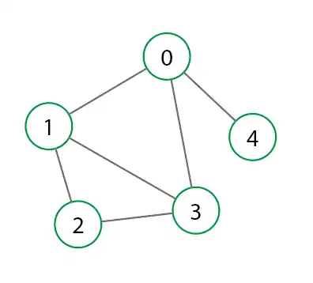

Análisis de Algoritmos
Pattzy Gomez Diana Tatiana
Complejidad, eficiencia y optimización de estructuras de datos y grafos.
Complejidad, eficiencia y optimización de estructuras de datos y grafos.
El análisis de algoritmos es la rama de la informática que estudia el comportamiento, eficiencia y rendimiento de los algoritmos en función del tamaño de entrada.
Se basa en modelos matemáticos que permiten medir recursos como tiempo de ejecución y memoria utilizada.
Representa el número de operaciones elementales ejecutadas por un algoritmo.
Se analiza principalmente el peor caso (Worst Case Analysis).
Mide la cantidad total de memoria requerida por un algoritmo.
Un algoritmo puede ser rápido pero ineficiente en memoria.
Permite estudiar el crecimiento del algoritmo cuando n → ∞.
Ignora constantes y términos de menor orden.
Muchos algoritmos recursivos se analizan mediante ecuaciones de recurrencia.
Ejemplo: T(n) = 2T(n/2) + n
Puede resolverse utilizando el Teorema Maestro.
Permite resolver recurrencias de la forma:
T(n) = aT(n/b) + f(n)
Dependiendo del valor de f(n) se determina el orden de complejidad final.
Un grafo G = (V, E) está compuesto por un conjunto de vértices V y un conjunto de aristas E.
Para grandes volúmenes de datos, un algoritmo O(n log n) es significativamente más eficiente que uno O(n²).
La elección correcta impacta directamente en el rendimiento del sistema.
Los grafos pueden representarse visualmente mediante nodos y aristas. Esta representación permite comprender conexiones, caminos mínimos y estructuras jerárquicas.

En la imagen se observa un grafo no dirigido donde los vértices están conectados mediante aristas simples.
El análisis de algoritmos permite diseñar soluciones óptimas, escalables y eficientes.
Comprender la complejidad es fundamental para el desarrollo de software de alto rendimiento.
Click en el fondo blanco para crear un nodo.